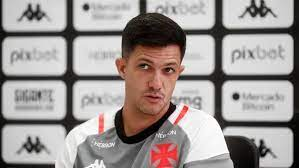

Novidades
Haaland é eleito o jogador da temporada da Premier League
Fim de temporada Euroupeu
Erling Haaland foi eleito o Jogador da Temporada da Premier League neste sábado (27), após uma temporada de estreia recorde, na qual marcou 36 gols e ajudou o Manchester City a selar o terceiro título consecutivo da liga.
O jogador de 22 anos também foi eleito o melhor jogador jovem da liga, tornando-se a primeira pessoa a ganhar os dois prêmios na mesma temporada.
Haaland marcou 36 gols em 35 jogos nesta temporada, quebrando o recorde anterior de 34 em uma única campanha na Premier League compartilhada por Andy Cole e Alan Shearer, que permaneceu por quase três décadas.

Diretor executivo do Vasco, Paulo Bracks concedeu coletiva nesta terça-feira (30), no CT Moacyr Barbosa, na Zona Oeste do Rio de Janeiro, para falar sobre o momento atual do clube, que está na zona de rebaixamento do Campeonato Brasileiro e não vence há sete rodadas.
O dirigente cruzmaltino admitiu que, nestes primeiros cinco meses de trabalho na temporada, erros aconteceram e precisam ser corrigidos, mas descartou saídas, incluindo a do técnico Maurício Barbieri.
"Tenho total confiança no trabalho do treinador, da comissão técnica e, principalmente, total confiança no trabalho que está sendo feito esse ano no Vasco, em cinco meses de trabalho. Eu entendo que algumas rotas precisam ser corrigidas, e serão. Mas, internamente, nesse momento. É um momento ruim de resultados, um momento em que a gente não queria estar nessa posição na tabela, não planejamos estar nessa posição da tabela, na oitava rodada de um campeonato de 38. Porque tem muita gente que já cravou o final do campeonato, mas estamos na oitava rodada. E a gente vai corrigir rotas, sim. A gente entende que erros aconteceram e vamos corrigi-los internamente. A avaliação do trabalho de todos é diária, o meu trabalho, o do Abel (Braga), do Barbieri, dos jogadores, dos funcionários do CT. Somos e seremos os nomes que tirarão o Vasco dessa situação, hoje, da tabela. Os funcionários do CT, os jogadores, o grupo de jogadores, Barbieri, Abel Braga e eu", começou por dizer.
"Estou aqui, hoje, para exteriorizar ao torcedor do Vasco que eu concordo com algumas críticas, óbvio que sim. A gente está aqui todo dia, a gente trabalha todos os dias dentro do clube, a gente conhece a nossa realidade e o nosso trabalho. As críticas construtivas a gente as aproveita e estamos as aproveitando. Quando eu digo de correção de rota, é porque não queríamos estar nessa situação na tabela. A gente teve jogos, dois, principalmente, que deveríamos ter tido um resultado diferente, com um resultado de vitória. Esses jogos seriam cruciais nessa minha entrevista hoje, nesse momento de análise da tabela do Vasco, da classificação do Vasco. Dois jogos. E a gente entende que o momento, apesar de ruim, ele é bom para que a gente possa olhar internamente e fazer diferente, para colher resultado diferente. Esse dedo não vai ser apontado para uma só pessoa, está sendo apontado para o clube como um todo, de todo um processo que o clube está vivendo, que é um processo novo, é um nova era, sim", prosseguiu.
Creation Date: 27/05/23
Adress: Rua Uinio Brien, 99
Spoken langages
Nationality Brazilian
+99 9999-9999
Email: futmaxempress@hotail.com